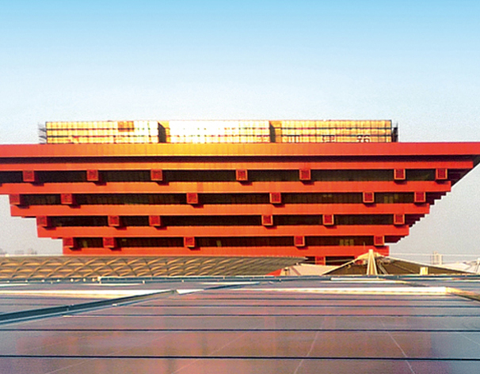

- This is an example of the basic theme.
- jCarousel is supported and can be integrated with PikaChoose!
 Be sure to check out PikaChoose.com for updates.
Be sure to check out PikaChoose.com for updates.- You can use any type of html you want with PikaChoose
- PikaChoose survives on your donations! Keep the project alive with a donation.
- PikaChoose survives on your donations! Keep the project alive with a donation.